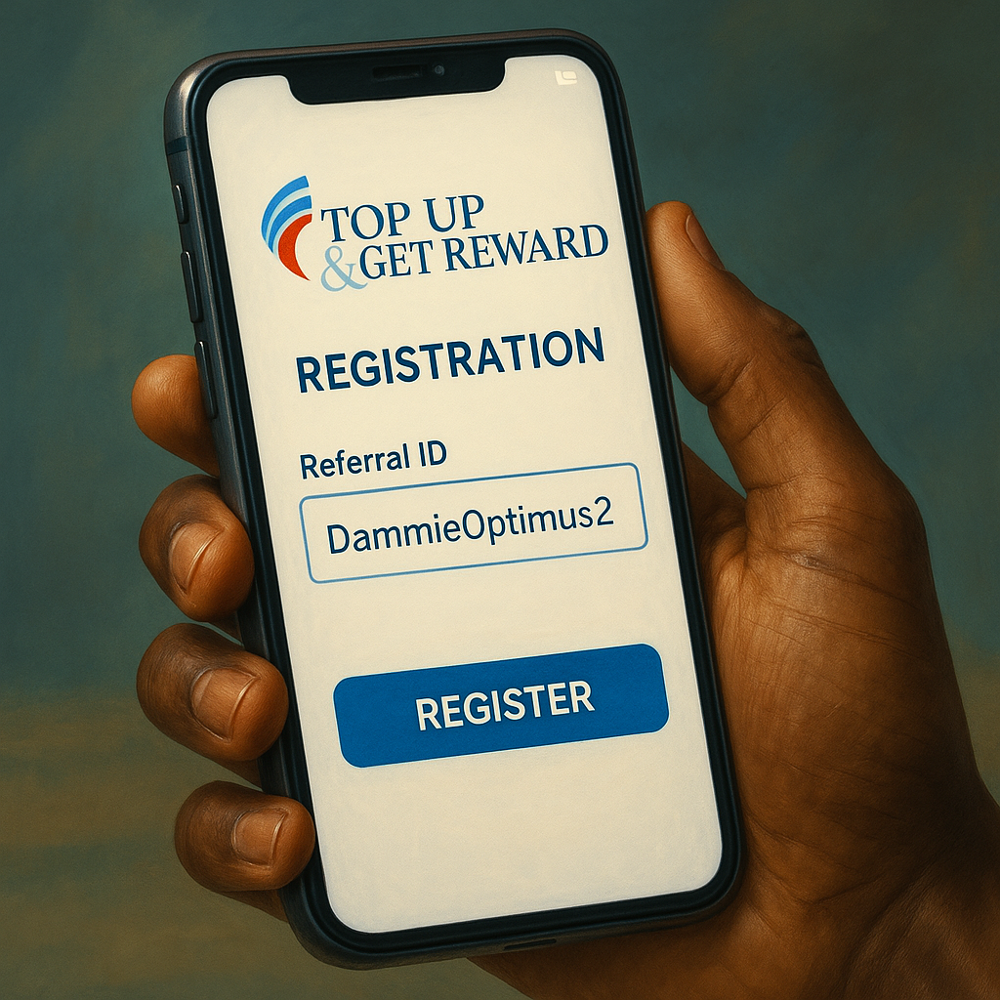
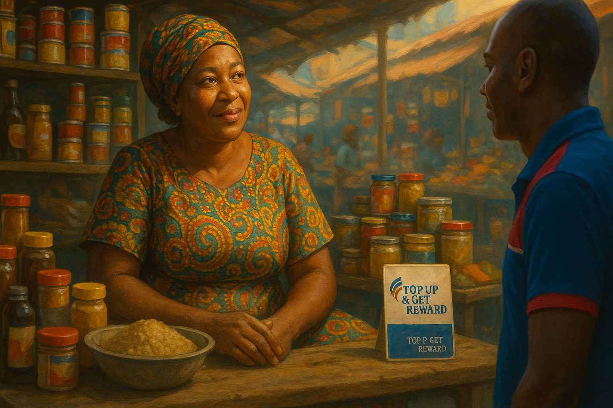
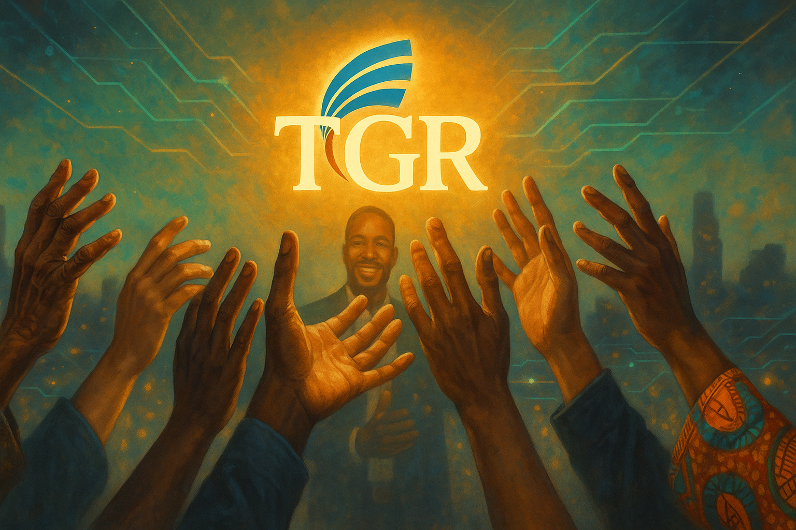

The Lagos air thrummed with a relentless energy, a symphony of roaring danfos, spirited market cries, and the silent, desperate prayers of millions. It was a city of stark contrasts, where towering edifices of commerce cast long shadows over sprawling settlements of struggle. In this concrete jungle of dreams and despair, Dammie Optimus moved not as a conqueror, but as a quiet catalyst. He wasn't just another face in the teeming crowds; he carried a secret, a digital key he believed could unlock a different kind of wealth for those brave enough to turn it: Top Up and Get Reward – TGR.
Dammie had seen the hustle. He’d felt the pinch. He knew the gnawing anxiety of an empty wallet in a city that never slept and always demanded its due. But he’d also discovered a revolutionary truth: the very telecommunication services that silently drained pockets – the airtime, the data, the cable subscriptions, the electricity bills – held within them the seeds of financial empowerment. His mission was deceptively simple: to show his fellow Nigerians how to turn their everyday expenses into an ever-flowing stream of income. This wasn't about a handout; it was about a hand up, a pathway paved with digital nairas, strategic connections, and the unwavering belief that everyone deserved a shot at a better life.
Chapter One: The Graduate's Gauntlet
The humid air of the Onikan job fair hung heavy with the scent of desperation and cheap printing ink. Broda Kunle, his shoulders slumped under the weight of a well-worn suit and three years of unanswered applications, felt the last vestiges of hope seeping away. Each "No Vacancy" sign, each dismissive glance, was another nail in the coffin of his youthful ambitions. "Is this it?" he muttered, the neatly stacked CVs in his hand feeling like a bundle of dead leaves. "A first-class degree in Economics, and I can't even afford a decent plate of jollof."
Kunle, facing yet another dead end in his job search.
Dammie Optimus, observing from a nearby bench, recognized the familiar shadow of despair that clung to the young man. He approached, his smile gentle, his eyes kind. "Tough crowd today, eh?" he began, his voice a calm counterpoint to the fair's cacophony.
Kunle: (Startled, then sighing) "Oga, you have no idea. It’s like… like I'm invisible. I just need a chance, something, anything."
Dammie: "I understand that feeling more than you know. But what if the 'something' you're looking for isn't about finding a traditional job right away, but about creating your own income stream? Using something you – and almost everyone in this city – do every single day?"
Kunle: (Scoffs lightly) "If you're about to tell me to watch videos online for 10 kobo, Oga, please save your breath. I've heard them all."
Dammie chuckled, a warm, genuine sound. "Far from it, my brother. I’m talking about a legitimate Nigerian company, registered with the Corporate Affairs Commission (RC: 1505794) and licensed by the Nigerian Communications Commission. It’s called Top Up and Get Reward – TGR. Our CEO, Mr. Adesayo Samuel Babatunde, is a Fellow Chartered Accountant. This isn't some fleeting online fad; TGR has been empowering Nigerians since 2018."
He smoothly navigated his smartphone, the screen glowing invitingly in the dim hall. "This," he said, showing Kunle his personal TGR dashboard, "is my own Virtual Top-Up portal. When I buy airtime for my phone, say ₦1,000, TGR gives me 2% to 2.5% back. That's ₦20 to ₦25 instantly. Same for data. It might seem small, but how much do you get back now when you recharge? Zero, right?"
Kunle: (Leaning in, a flicker of interest in his eyes) "Okay, 2%... that’s something, I guess. So, I just buy my recharges through this TGR thing?"
Dammie: "That’s how you benefit personally. But the real opportunity, especially for someone with your drive, lies in sharing this. When you introduce someone to TGR and they activate their own portal, the company pays you a direct referral commission of 22% of their chosen package fee. And that's after they deduct a small 5% for system maintenance and development, ensuring the platform stays robust for all of us."
Kunle: "Package fee? How much are we talking? Because, Oga, 'sapa' is real."
Dammie smiled empathetically. "TGR is designed for everyone, regardless of their starting capital. The most accessible package is the Pearl Mini, for just ₦2,500. And here’s the beautiful part: if you register someone on that Pearl Mini package, you earn ₦522.50. And the person you just registered? They immediately get 10% of their ₦2,500 – that’s ₦250 – credited back to their TGR wallet. It's a win-win from the very start."
Pearl Mini (₦2,500) - Your First Step:
Your Instant Registration Bonus: ₦250 (10% of package fee)
Direct Referral Commission (when you sign up someone on Pearl Mini): ₦522.50
Cashback: 2-2.5% on personal Airtime/Data.
Commission Levels: Earn from Level 1 & Level 2 referrals.
Point Value (PV): None on this package (PVs start from Coral ₦10k+).
Kunle: (Calculating) "₦2,500… I could borrow that from my sister. So, if I tell, say, five of my friends who are also job-hunting…"
Dammie’s eyes lit up. "Exactly! That's what we call the 'Fantastic 5' strategy. You activate your Pearl Mini. You find five serious friends who also see the potential. For each one, you earn ₦522.50. So, 5 friends times ₦522.50 equals ₦2,612.50! You've made back your initial ₦2,500, plus a profit of ₦112.50, just from your first five direct referrals – your Level 1."
The shadow on Kunle's face seemed to lift, replaced by a dawning excitement. "So, my money comes back that quickly? And then what happens?"
Dammie: "Then the journey truly begins. The Pearl Mini package allows you to earn commissions from two levels. If each of your five friends duplicates your effort and brings in their own 'Fantastic 5' – that's 25 people on your Level 2 – you earn an indirect commission from their ₦2,500 registrations too. That’s 5% of their package fee (minus the 5% company charge), which comes to ₦118.75 for each of those 25 people."
Dammie quickly sketched it on a notepad: Kunle at the top, five branches to his Level 1, and each of those branching to another five for Level 2. "So, 25 people times ₦118.75 equals ₦2,968.75 from your Level 2 alone! Add that to your Level 1 earnings: ₦2,612.50 + ₦2,968.75 = ₦5,581.25. All from an initial ₦2,500, hard work, and belief."
Kunle: (A slow smile spreading across his face) "₦5,581.25… Oga Dammie, this… this actually sounds like a plan. A real plan."
"It is, Kunle," Dammie said, his voice filled with conviction. He brought up the TGR registration page on his phone. "Ready to take that first step? You register using my referral link. My ID is DammieOptimus2. Once you’re active, I’ll personally guide you on how to access *your own* referral link and start building your 'Fantastic 5'. This is teamwork."

The gateway to a new beginning: TGR Registration with Referral ID: DammieOptimus2.
For the first time in months, Kunle felt a surge of genuine hope. He looked at Dammie, then at the glowing screen. "Okay, Oga Dammie," he said, his voice firm. "Let's do this. I'm tired of being a statistic. I'm ready to write my own story."
The Tejuosho market pulsed with a chaotic rhythm, but for Mama Funke, proprietor of a modest provisions stall, the beat was fading. Sales had dwindled to a trickle. The vibrant Ankara fabrics she stocked remained stubbornly on their shelves, and the whispers of unpaid supplier bills and her children’s looming school fees were a constant, nagging ache in her heart. She fanned herself with a tattered price list, the Lagos sun beating down mercilessly, mirroring the heat of her anxieties.
"Ah, Dammie, my pikin!" she exclaimed, a brief smile touching her lips as Dammie Optimus appeared before her stall, a customary offering of chilled sachet water in hand. "Na God bring you. Market dry like harmattan dust today."
Dammie: (His expression full of empathy) "Mama Funke, I see the struggle. But what if I told you that the very money you spend on your GOtv at home, the data you use to call your customers, even the NEPA bill for this your shop, could become a source of income, not just an expense?"
Mama Funke: (A skeptical eyebrow raised) "Dammie, Dammie. You and your oyinbo ideas. No be say you wan sell me one kind miracle soap now?"
Dammie laughed. "No miracle soap, Mama. Just a smart Nigerian solution called TGR – Top Up and Get Reward. Remember Broda Kunle, that sharp graduate I was telling you about? The one who was always looking so downcast? He started with TGR just last month with only ₦2,500. As we speak, he’s not only made back his money but has earned over ₦10,000! He’s helping his friends do the same, and money is entering his TGR wallet even when he's not actively working. He's even started talking about upgrading his package to earn more!"
Mama Funke listened, her fanning slowing. Kunle’s transformation was already neighborhood gist. "So this TGR… how e take concern market woman like me?"
Dammie leaned in, his voice earnest. "Mama, with TGR, you get your own business portal on your phone. Imagine this:
TGR Benefits for You, Mama Funke:
Instant Cashback: 10% of your registration package fee comes right back to your TGR wallet.
Savings on Bills: Get 2-2.5% back on all your airtime and data purchases. For your GOtv, it's 0.5% cashback. For your shop's NEPA bill, 1% cashback. Over a year, these savings add up significantly!
Earn from Others: This is the powerful part. When you tell other market women, your church members, your relatives about TGR, and they register through you, TGR pays you 22% of their package fee!
Mama Funke: "Twenty-two percent? Chai! And how much person go pay to join this TGR?"
Dammie: "You can start small with Pearl Mini for ₦2,500, just like Kunle. But Mama, for someone like you, a businesswoman with connections, I'd suggest considering a slightly higher package, like the Coral package for ₦10,000. Why? Because higher packages unlock deeper earning levels and, very importantly, Point Values, or PVs."
"PVs?" Mama Funke echoed, intrigued. "What is that one again?"
"Point Values, Mama, are like your shares in TGR's success. They accumulate as you and your team register new members on qualifying packages. These PVs lead to amazing incentives – we're talking a ₦750,000 International Trip Fund, a ₦5 Million First Car Fund, a ₦6 Million Second Car Fund, and even a ₦10 Million House Fund! With the Coral package, you start earning 20PV for every new Coral member your direct downlines register on your first level."
Dammie showed her a simple calculation. "If you, on the Coral package, register five fellow market women who also choose the Coral package:
Your Direct Commission: 5 people x ₦2,090 (22% of ₦10k, after 5% fee) = ₦10,450.
Your Point Value: 5 people x 20PV = 100PV.
You've made your ₦10,000 back, with a ₦450 profit, and you're already on your way with 100PV towards those life-changing incentives! And with Coral, you earn referral commissions up to 6 levels deep in your team!"

A spark of understanding in Mama Funke's eyes as the possibilities of TGR unfolded.
Mama Funke was silent for a long moment, the usual market hubbub fading into the background. She looked at her unsold goods, then at Dammie's earnest face, then at the glowing TGR logo on his phone screen where his referral ID DammieOptimus2 was clearly visible. A new kind of calculation was happening in her mind, one not of loss, but of exponential gain.
Mama Funke: (Her voice firm with newfound resolve) "Dammie, my son. This your TGR… it is not soap, it is… it is hope. Sign me up for that Coral package. And then, you will teach me how to talk to these other women. If Kunle can do it, a market woman like me, with God's grace and this TGR, we will shake this market!"
Dammie’s smile was radiant. "With pleasure, Mama Funke! Let's get you registered right now with my ID, DammieOptimus2. And then, we strategize. Your market empire awaits!"
Chapter Three: The Guardian's Vigil, The Student's Quest
The Lagos night was a tapestry of shadows and distant city hum. At the gate of a quiet residential estate, Baba T, a security guard whose silver hair mirrored his years of faithful service, fought off sleep and a gnawing worry. His meager pension was a cruel joke against the rising cost of living, and his granddaughter, bright-eyed and full of promise, was due to start university soon. How would he manage?
Nearby, under the amber glow of a streetlight, Sade, a university student herself, hunched over her phone, her brow furrowed in frustration. "Data finished again!" she groaned softly. "And my term paper is due. These data bundles will be the end of me. If only there was a way to make some extra cash without missing classes."
A shared moment of nocturnal struggle, unknown to each other, yet connected by need.
Dammie Optimus, on one of his late-evening drives through the neighborhood – he often checked in on Baba T – noticed the two solitary figures. He parked his car and approached with his usual quiet warmth.
Dammie: "Baba T, still holding the fort, I see. Good evening. Sade, you look like that phone is giving you trouble."
Baba T: (Managing a tired smile) "Ah, Dammie, my son! Welcome. Yes o, man must work. But old age and small money no be good friends."
Sade: (Looking up, relieved to see a familiar face) "Mr. Dammie! It’s this data. It vanishes like morning mist. And I really need a way to earn some money for textbooks and… well, more data."
Dammie nodded, his gaze thoughtful. "I believe I have something that could help both of you, in different yet connected ways. It’s called TGR – Top Up and Get Reward. Baba T, imagine earning a steady income that complements your pension, something you can build even from your security post during quiet hours. Sade, what if I told you that you could get your data effectively cheaper, and also earn enough to not only cover your data costs but your books and more?"
He explained the core of TGR: the personal cashback on recharges – 2% to 2.5% on airtime and data, 0.5% on cable TV subscriptions, 1% on electricity bills. "Sade," he said, "if you buy a ₦1000 data bundle through your TGR portal, you'd effectively pay between ₦975 and ₦980. That's an instant saving. Baba T, the NEPA bill for your house, your Startimes subscription – you get a percentage back every time you pay through TGR."
Sade: "Cheaper data sounds like heaven! But how do I make actual money, Mr. Dammie?"
Dammie: "That’s where the 'Get Reward' part shines. You share the TGR opportunity. Sade, think of your classmates, your hostel mates. Many of them face the same data struggles. If you introduce them to TGR, and they activate a starter package like the Pearl Mini for ₦2,500 using your unique referral link (which you get after you register with mine), you earn ₦522.50 on each one. Sign up five friends – that's ₦2,612.50. Enough for a good amount of data and a textbook or two, isn't it?"
To Baba T, he said, "Baba, your years of service have earned you respect. People in your church, your old colleagues from previous jobs, even the residents in this estate – they all use these telecom services. If you show them how TGR can save them money and also offer them an earning opportunity, you can build a network that provides you with a consistent income stream, a true 'retirement plan B'."
TGR: A Solution for All Ages:
For Students like Sade: Offset data costs, earn for academic materials, build entrepreneurial skills.
For Retirees/Seniors like Baba T: Supplement income, create a legacy, stay active and connected.
The "Fantastic 5" Principle: Start by sharing with 5 people, teach them to do the same, and watch your network (and earnings) grow exponentially.
Strategic Upgrades are Key: As your earnings grow, upgrade your TGR package (from Pearl Mini ₦2.5k, to Pearl ₦5k, Coral ₦10k, Emerald ₦20k, Sapphire ₦30k, Ruby ₦40k, Diamond ₦50k, up to Executive Diamond ₦100k). Higher packages unlock:
Deeper commission levels (earn from more people in your team).
Higher Point Value (PV) generation for massive incentives.
Dammie elaborated on the power of duplication and strategic upgrades. "The initial ₦2,500 is just the seed, Baba, Sade. As your team grows and people see the benefits, they too will share. And when you use a portion of your earnings to upgrade your own package, you unlock the ability to earn from even more levels of your team. For example, the Pearl Mini lets you earn from 2 levels. But the Diamond package (₦50,000) lets you earn referral commissions from 10 levels deep and Point Values from 5 levels deep! That’s where the truly significant income lies."
Baba T: (His tired eyes showing a new light) "So, this small N2,500… e fit become something big if person serious and God help am?"
Sade: "And I wouldn’t have to beg my parents for data money all the time! I could even help them with some bills!"
"Precisely!" Dammie affirmed. "And it’s not just about the referral bonuses. Every single time anyone in your TGR team, down to the levels your package allows, recharges their phone or buys data, you earn a small but consistent commission – between 0.1% and 0.15%. Imagine, Sade, if you eventually have a team of a thousand students, and each just buys ₦100 airtime. That could be ₦100 to ₦150 for you daily, passively, from their recharges alone!"
The quiet night seemed less daunting now, filled with the hum of possibility. Baba T straightened his shoulders. Sade clutched her phone, no longer with frustration, but with a sense of anticipation.
"Are you both ready to turn your everyday expenses into an extraordinary opportunity?" Dammie asked, his phone already displaying the TGR registration page, his referral ID DammieOptimus2 prominently featured.
Baba T & Sade (almost in unison): "Yes, Mr. Dammie! Show us the way!"
"The Pearl Mini package is an excellent starting point for both of you," Dammie advised. "Once you're registered and active using my ID, DammieOptimus2, I'll walk you through finding your own referral links on your TGR portals. Then, your journey of sharing and earning truly begins."
Chapter Four: The Skeptic's Conversion, The Power of Proof
At the bustling "Shine Your Eye" car wash in Surulere, Emeka, a man whose cynicism was as legendary as his love for a well-polished car, watched Dammie Optimus with narrowed eyes. Dammie was in an animated conversation with Broda Kunle, who, Emeka had to admit, was looking remarkably more put-together these days – new laptop bag, confident stride, none of the despondency that used to cling to him like cheap perfume.
Emeka: (To his friend, a fellow car wash patron) "See that Dammie again, preaching his 'online money' gospel. And Kunle looks like he’s drunk the Kool-Aid. Last week, it was miracle farming, this week, it’s recharge card riches. Hmph."
Kunle, overhearing the tail end of Emeka's comment, turned with a grin that was anything but sheepish. "Emeka, my man! Still dey form doubting Thomas? This TGR 'gospel' you're scoffing at just bought me this new laptop for my freelance writing gigs – gigs I now have time for, thanks to my TGR income! And guess what? I'm on track to hit 10,000 fresh Point Values this month, which means an extra ₦120,000 leadership bonus from TGR, on top of my regular earnings!"
Proof positive: Kunle's success begins to chip away at Emeka's skepticism.
Dammie joined them, his approach always disarmingly friendly. "Emeka, my brother! Good to see you. Skepticism isn't a bad thing; it shows you're a thinker. But don't let it build a wall so high you can't see a genuine opportunity when it’s knocking. TGR isn't some flimsy 'scheme.' We're talking about leveraging a colossal industry – Nigerians spend over ₦446 Billion every single month, and a staggering ₦21.4 Trillion annually on telecommunications. TGR simply gives ordinary people a way to get a piece of that action."
Emeka: (Folding his arms, still wary) "Trillion, billion… those are just big words, Dammie. All these points, PVs, levels… it sounds like one complex computer game designed to confuse people until their money disappears."
Dammie smiled patiently. He pulled out his tablet, displaying a clear, concise infographic of the TGR Leadership Incentives – the very same ones that had Mama Funke dreaming of new ventures.
TGR Leadership Incentives - The Big Picture:
What are Point Values (PVs)? Think of them as loyalty points on steroids. You earn PVs when new members join your team on qualifying packages (Coral ₦10k and above), and the number of team levels you earn PVs from depends on YOUR own package. The higher your package, the deeper your PV reach!
The Rewards of Accumulation:
25,000 Total PV: ₦750,000 (International Trip Fund – see the world!)
100,000 Total PV: ₦5,000,000 (First Car Fund – drive your dream!)
250,000 Total PV: ₦6,000,000 (Second Car Fund – upgrade your ride or start a fleet!)
500,000 Total PV: ₦10,000,000 (House Fund – own your home!)
Total Cash Incentives: A mind-blowing ₦21,750,000!
Monthly Consistency Pays: Generate at least 10,000 *fresh* PV in your team within a month, and TGR rewards you with an additional ₦120,000 Leadership Bonus for that month!
"It's not a game, Emeka," Dammie explained. "It's a structured reward system. You start, say, with the Pearl Mini (₦2,500) like Kunle did – no PVs on that initial package. But as Kunle earned, he upgraded to Coral (₦10,000). Instantly, he started earning 20PV for every new Coral member his direct downlines registered. Then he upgraded to Sapphire (₦30,000), and now he's earning PVs from three levels of his team's registrations. His PVs are climbing steadily towards that first ₦750k incentive!"
As if on cue, Mama Funke drove up in a gleaming, fairly-new Toyota Sienna, honking cheerfully. She stepped out, radiating success, keys dangling from her fingers.
Mama Funke: "Dammie! Kunle! Good morning! Emeka, you still dey look? This TGR o, it’s the real deal! My Diamond package (₦50,000) PVs grew faster than beans in rainy season! I just collected my ₦5 MILLION Car Fund from TGR! This Sienna na for my new inter-state transport business! No more selling provisions under hot sun for me full-time!"
Emeka’s jaw practically hit the freshly washed pavement. Mama Funke? The provision seller? Driving a Sienna bought with "recharge card money"? It was too tangible, too real to dismiss.
Emeka: (Stammering slightly) "M-Mama Funke? You? A car? From… from this TGR?"
Mama Funke: (Beaming) "Na so, my brother! I started with Coral after Dammie showed me the light using his referral ID DammieOptimus2. Then I used my earnings from my market women team – we all use our own referral links now, building deep and wide – to upgrade to Diamond. The commissions from 10 levels are sweet, and the PVs from 5 levels are even sweeter! Dammie just showed us the path, we walked it!"
Dammie added, "You see, Emeka? It’s about strategic growth. You earn, you reinvest a part of it into upgrading your package. This unlocks deeper commission levels and more PV-earning levels. It’s a business model that rewards effort and smart decisions."
The wall of Emeka's cynicism finally crumbled. He looked at Mama Funke's Sienna, at Kunle's confident demeanor, at Dammie's unwavering belief. This wasn't just talk; this was tangible, life-altering success.
Emeka: (His voice humbled) "Okay… Dammie. I've seen enough. I’m tired of washing cars and having little to show for it. How do I start? And which package makes the most sense if a man is truly serious about changing his story?"
Dammie’s smile was warm and welcoming. "A wise decision, Emeka! If you're aiming for those significant incentives and the deepest earning potential, the Diamond package (₦50,000) or even Executive Diamond (₦100,000) is your goal. They open up earnings from 10 levels of referrals and 5 levels of PVs. But the most important step is to start. You can begin with Pearl Mini (₦2,500), Coral (₦10,000), or any package in between and upgrade as you grow. The system is flexible."
He held out his phone, the TGR registration page already cued up. "Let's get you into the system with my referral ID, DammieOptimus2. After you're active, Emeka, the very first thing we'll do is locate *your own* unique referral link on your new TGR portal. Then, my friend, I’ll personally coach you on building your own 'Fantastic 5' and beyond!"
Emeka nodded, a new determination etched on his face. He took the phone and began to fill in his details, the roar of the car wash fading as a new, more promising sound – the hum of opportunity – began to fill his ears.
Months turned into a year, then two. The seeds Dammie Optimus had sown with TGR, watered by the efforts of Kunle, Mama Funke, Baba T, Sade, Emeka, and countless others they had onboarded, had blossomed into a vibrant, sprawling garden of prosperity. The change was palpable, not just in individual bank accounts, but in the very fabric of their communities. Kunle was now a sought-after TGR leader, conducting his own training sessions, his earlier despair a distant memory. Mama Funke’s transport business was thriving, providing employment for others, and she was a Diamond Director in TGR, inspiring women across markets. Baba T enjoyed a comfortable retirement, his granddaughter excelling in university, her fees paid without stress, thanks to his TGR earnings. Sade was a campus ambassador for TGR, debt-free, and empowering her peers. Emeka, once the arch-skeptic, was now a Ruby partner, his car wash business expanded, and his TGR team a testament to his converted zeal.
The culmination of this wave of change was the "TGR Wealth Creation Summit," an event orchestrated by Dammie and his core leaders, held in a grand hall in Ikeja. It was packed to the rafters with eager faces – new prospects, budding TGR partners, and seasoned veterans, all buzzing with excitement.
The TGR Summit: A testament to collective success and future aspirations.
Dammie Optimus stood on stage, not as a lone figure, but as the focal point of a collective success story. His voice, amplified by the microphone, resonated with passion and authenticity.
Dammie: "Welcome, TGR champions and future champions! Look around you! This hall isn't just filled with people; it’s filled with dreams being realized, with lives being transformed! It’s filled with individuals who made a conscious decision: to stop being mere consumers in the multi-trillion Naira telecommunications industry and to become active, earning participants! We are Top Up and Get Reward!"
Behind him, a large screen flashed through the TGR journey: images of the CAC certificate, the NCC license, the smiling face of CEO Adesayo Samuel Babatunde (FCA), and bullet points reiterating the core benefits:
The TGR Ecosystem - A Universe of Benefits:
Instant 10% Welcome Bonus: Your journey starts with an immediate reward.
Personal Usage Cashback: 2-2.5% on Airtime/Data; 0.5% on Cable TV subscriptions (GOtv, DStv, Startimes); 1% on Electricity (PHCN) payments.
Powerful Referral Program:
Direct Referrals (Level 1): 22% commission (after 5% company fee).
Indirect Referrals: Earn from your team's efforts across multiple levels (L2&3: 5%; L4: 2.5%; L5-L10: 1.5% - depth depends on your active package).
Daily Passive Income Stream: Earn 0.1% to 0.15% commission on every airtime and data transaction made by every member of your team, down to your eligible levels. This is true residual income!
Life-Changing Incentives via Point Values (PVs): From International Trips (₦750k) to Cars (₦5M & ₦6M) and Houses (₦10M), plus monthly leadership bonuses (₦120k).
A Robust, Sustainable Platform: Built on the ever-expanding telecom sector, operational since 2018, with fast, reliable withdrawals directly to your local bank account.
Comprehensive Support & Training: You're never alone. Your upline and the wider TGR community are there to guide you.
"Many of you started like Kunle, with just ₦2,500 and a heart full of hope," Dammie continued, his gaze sweeping across the hall. "Others, like Mama Funke, saw the bigger picture and invested in higher packages like Coral, Diamond, or Executive Diamond to maximize their earning potential from day one. There is no 'one-size-fits-all' except the shared desire for a better tomorrow. TGR provides the vehicle; you provide the drive!"
He spoke of the "Fantastic 5" and "Fantastic 10" team-building strategies, emphasizing the power of duplication. "It’s not just about who *you* bring; it’s about teaching those you bring how to succeed, how to find *their* own referral links, how to build *their* own teams. That is the heart of TGR's exponential growth. Your success is tied to the success of your team."
Testimonies flowed. Broda Kunle, now a polished speaker, shared how TGR had not just given him an income but restored his dignity. Mama Funke had the audience roaring with laughter and applause as she recounted her journey from market stall to transport fleet owner. Baba T, via a pre-recorded video due to his "newfound hobby of supervising his small farm bought with TGR money," spoke of peace of mind. Sade, vibrant and articulate, detailed how TGR funded her education and ignited her entrepreneurial spirit.
Finally, Dammie returned to the podium, a profound sense of gratitude and purpose emanating from him.
Dammie: "My friends, my TGR family! This is not a dream. This is the reality of Top Up and Get Reward. It is a testament to Nigerian ingenuity, resilience, and the power of collective effort. The telecom giants make billions. Isn't it time you got your share? The system is here. The support is here. The opportunity is undeniable."
He gestured towards the large screen, now displaying his call to action, his referral ID a beacon.
Your Chapter Awaits
The stories of Kunle, Mama Funke, Baba T, Sade, and Emeka are not just tales; they are testaments to the transformative power of opportunity seized. They are echoes of what is possible when you decide to step out of the ordinary and embrace a system designed for your growth. Dammie Optimus was their guide, their first connection to Top Up and Get Reward, but their success became their own as they learned, built, and duplicated.
You've walked through their struggles, felt their anxieties, and witnessed their triumphs. You've seen how TGR, a legitimate Nigerian company, offers a practical pathway to turn everyday expenses into substantial income and life-changing incentives. From the accessible Pearl Mini (₦2,500) to the ambitious Executive Diamond (₦100,000), there's a starting point for everyone. You've learned about:
The TGR Advantage - A Final Recap:
Instant 10% Registration Bonus: Get a part of your activation fee back immediately.
Personal Usage Cashback: Earn 2-2.5% on Airtime/Data, 0.5% on Cable TV, 1% on Electricity bills.
Direct Referral Commissions: A substantial 22% (after 5% maintenance) when you introduce someone.
Indirect Team Commissions: Earn from your team's growth, down multiple levels (5% L2&3, 2.5% L4, 1.5% L5-10, package dependent).
Daily Transaction Bonuses: Earn 0.1%-0.15% from airtime/data recharges of your entire team.
Point Values (PVs): Accumulate PVs from team registrations (package dependent) for massive incentives:
A Sustainable Business: Leveraging the multi-trillion Naira telecom industry since 2018.
Quick Withdrawals: Access your earnings in minutes.
The question now is not whether TGR works – the lives transformed are proof. The question is, are you ready to write *your* own success story? Are you ready to stop being just a consumer in the vast telecommunications market and become a beneficiary, an entrepreneur, a leader?
Your journey, like theirs, starts with a single, decisive step. Dammie Optimus and his team are ready to welcome you, guide you, and support you as you build your TGR empire. The path is clear, the system is proven.

The opportunity is here. Reach out and grasp it.
Don't let hesitation be the gatekeeper to your potential. The time to act is NOW.